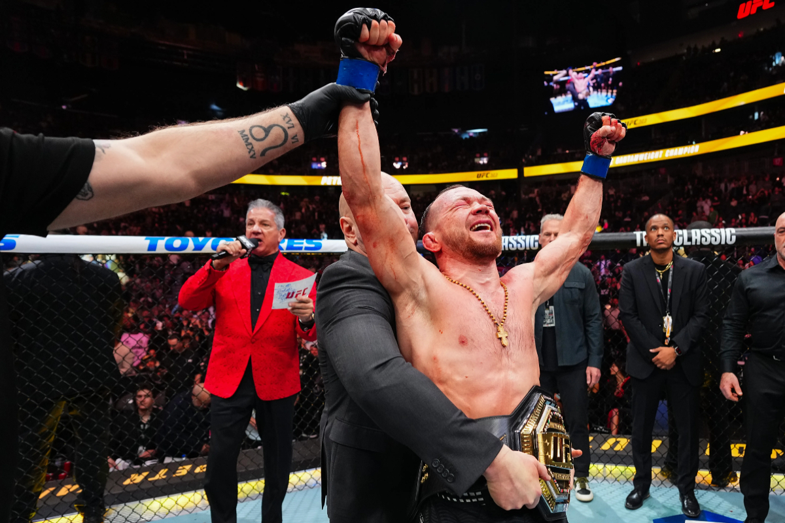

|
 |
|
| Nombre completo | Petr Evgenyevich Yan |
| Nacimiento | 11 de febrero de 1993 Dudinka, Taymyr, Rusia |
| Apodo | No Mercy |
| Nacionalidad | Rusa |
| Altura | 1,70 m |
| Peso | Peso gallo (135 lb) |
| Organización | Ultimate Fighting Championship (UFC) |
| Título | Campeón Mundial de Peso Gallo (hasta 135 lb) |
Petr Evgenyevich Yan (Dudinka, Rusia; 11 de febrero de 1993) es un artista marcial mixto ruso que compite en la división de peso gallo de la Ultimate Fighting Championship (UFC). Es dos veces Campeón Mundial de Peso Gallo en la UFC, conocido por su estilo preciso, boxeo técnico y fuerte defensa.
Yan nació en Dudinka, en la región de Taymyr en Rusia, donde se interesó desde joven por los deportes de combate, especialmente el taekwondo en su infancia. Más tarde se dedicó al entrenamiento de artes marciales mixtas y debutó como profesional en 2014.
Yan hizo su debut en la UFC el 23 de junio de 2018, ganando por nocaut en el primer asalto contra Teruto Ishihara. Su ascenso en la división de peso gallo fue rápido, y el 12 de julio de 2020 ganó el Campeonato Mundial de Peso Gallo de la UFC tras derrotar a José Aldo por TKO en el quinto asalto en UFC 251.
Tras perder el título por descalificación ante Aljamain Sterling en 2021, Yan continuó peleando entre 2022 y 2025 contra rivales de alto nivel, incluyendo derrotas ante Sterling, Sean O’Malley y Merab Dvalishvili. Su racha de victorias posterior le llevó de nuevo a la cima: el 6 de diciembre de 2025, en UFC 323, derrotó por decisión unánime a Merab Dvalishvili para **recuperar el título de peso gallo por segunda vez**.
Hasta principios de 2026, Petr Yan tiene un récord profesional de más de 20 victorias y 5 derrotas, con múltiples nocauts, decisiones y una sumisión en su carrera profesional, siendo respetado por su consistencia y nivel técnico.